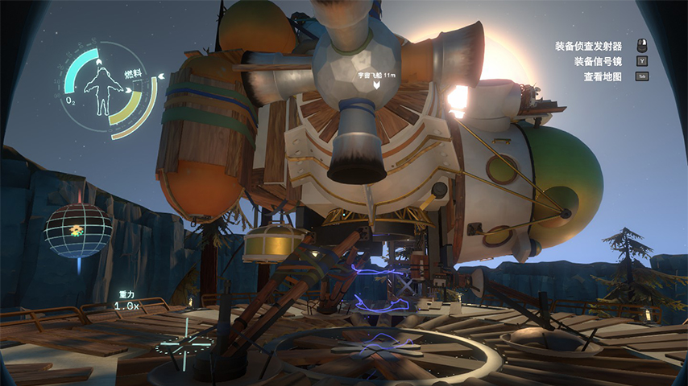

<返回
地图信息
- 大小 7.88MB(解压后 35.2MB)
- 地图版本 Classic 1.2.7（2022/10/6更新）
- 游戏版本 Java 1.18.2
- 地图时长 50-80min
- 建议游玩人数 1-4人
游玩须知
- 需要 Optfine
- 开启 移动光源
- 粒子效果 全部
- 资源包与解密部分 无关
- 如是服务端需要将 server.properties 中的 enable-command-block 改为 true
- 最重要！多读书！
书到用时方恨少
作者的话
作者主页
灵感来自另一款我非常喜欢的游戏 「星际拓荒」
| 星际拓荒 | 地图内截图 |
|---|---|
|  |
本地图有两间彩蛋房间
| 彩蛋房间1 | 彩蛋房间2 |
|---|---|
 |
通关地图后如想参观或炸图, 请使用以下两条指令：
/team join op @s
/gamemode creative
非常感谢 Ruler14制作组 各位成员的帮助：
| 建筑 | 技术 |
|---|---|
| 酷晨、猫酱、凉猫、大海、炎霜、白云、墨纹 | 木上、鹿瑶 |
速通相关
目前全收集速通记录: XXX XX:XX
如果你达成了更好的成绩，请将速通视频上传b站并@gufandf
要求:
- 收集全部物品，包括彩蛋房内
- 不可对地图进行任何修改
- 可以利用地图bug
- 时间以实际收集用时而非游戏内通关计时器
地图下载
如出现bug请通过B站私信联系
| 版本 | 下载链接 |
|---|---|
| 梦境世界 classic1.2.7 | 点击下载> |
| 梦境世界 classic1.2.6 | 点击下载> |